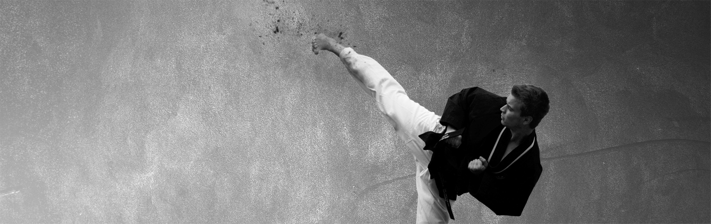

Arrangement
Gradering ungdom og voksne

Gradering for ungdom og voksen-gruppen.
Gradering for ungdom og voksen gruppen foregår søndag 12.6.2016. Skal du gradere må du melde deg på via hjemmesiden. Betalingen for graderingen foregår i klubben tirsdag 7.6. Teoriprøven skal avlegges samme dag.
Viktige tidspunkter og info du må få med deg om du skal gradere.
Teoriprøve skal tas tirsdag 7.6 i tidsrommet 1830-1930.
Betaling (kr 400) og utlevering av teoriprøven foregår i tidsrommet 1800-1830. Samme dag. Vi setter av tid til dette, så det må også du gjøre om du vil gradere.
Graderingen foregår søndag 12.6.2016 i tidsrommet 1200 - 1700 i Ringerikshallen.
Vi har familierabatt med 50 % for nr 2,3 osv fra samme familie som skal gradere.
Klikk her for påmelding!